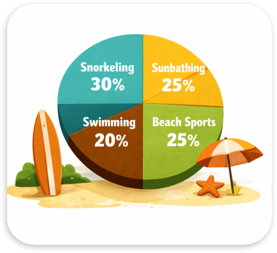
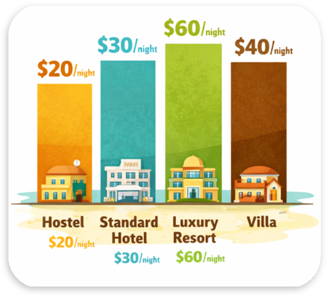

Thailand’s City That Never Sleeps
Pattaya Pulse:
Food, Sun and Neon Nights
From bustling promenades to nearby islands, the city offers an energetic and diverse escape. Discover Pattaya City, with vibrant nightlife and rich cultural landmarks.
Date: 02.04.2026
Readng time: 7 min.
Read: 46
Shared: 23

Pattaya never sleeps, and that's exactly what makes the city so special. By day, plenty of sunshine, bright beaches and street food stalls on every corner draw you in. By night, the coastal city transforms into a sea of neon lights. In this blog, we'll take you to the best markets, hidden local favourites and liveliest corners of the city. Feel the pulse of Pattaya, with great food, warm weather and nights you won't forget anytime soon.
Rain periods in Pattaya

The chart shows it at a glance: rainfall in Pattaya follows a clear rhythm. Spring is still relatively dry, but the showers noticeably pick up. In summer the rainy season peaks at around 260 to 270 millimetres, and the city sees its heaviest downpours. Autumn stays wet at roughly 200 millimetres before the rain eases off considerably in winter. That's when Pattaya shows its sunniest side, and the dry season invites you to enjoy the beach, street food and long neon nights.
Popular beach activities
At Pattaya's beaches there's something for everyone: snorkelling, the most popular activity at 30 percent, lets you explore the colourful underwater world. Sunbathing and beach sports each attract 25 percent, while 20 percent cool off with a swim.

Accommodation expenses
Pattaya fits every budget: a hostel costs $20 a night, a standard hotel $30, a villa $40 and a luxury resort $60 for those who want to fully indulge.

Pattaya's beaches offer something for every kind of traveller. Snorkelling is the top choice at 30 percent, with colourful marine life just offshore. Sunbathing and beach sports each draw 25 percent, from lazy afternoons under a parasol to games on the sand, while 20 percent simply cool off with a swim. When the day is done, you can rest in a place that suits your budget. Hostels start at around $20 a night and are ideal for backpackers who want to meet fellow travellers. A standard hotel costs about $30 and adds comfort and privacy, while a villa at roughly $40 offers extra space for friends or family. For a real treat, a luxury resort at about $60 a night brings pools, service and a true holiday feeling. Whichever you choose, the beach is never far away.
|
|